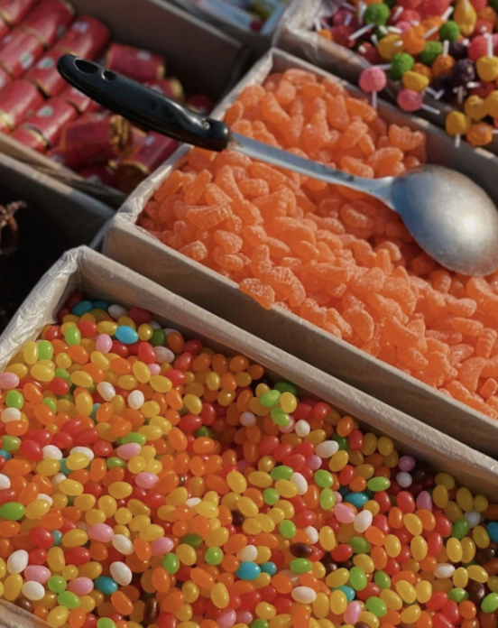

黄河大集｜赶一次黄河大集 寻一次家乡至味
发布时间: 2023-08-26 44 次浏览
-
过了腊八，年味愈浓。地方风俗浓郁的黄河大集，渐渐堆满特色家乡好物，从原生态农产品到糖果花卉、“海味”十足的干鲜海货，还有现场挥毫泼墨的新春祝“福”……岁末年初的家乡大集，不仅是一个买买买的市场，更是一份乡情所在。家乡的传统乡村大集，你逛过几个？走！一起去大集上感受满满的年味儿！
咬一口刚出锅脆香的油条，吸一碗热乎乎的豆腐脑，胃里的暖意渐渐传导至全身，口鼻呼出的白雾在眼前升腾，耳边是邻里乡亲谈论的家长里短……
小时候在冬日里赶集时留存的感官记忆，成了他乡游子剪不断的情意结。
赶大集，是东营人最爱的业余活动之一了。尤其是冬天赶大集，更透露出一股子北方人冬闲后的悠然与自得。
每逢大集，赶集的人一拨接一拨，人头攒动，摩肩接踵，此起彼伏的吆喝声、讨价还价声，汇聚成了充满温馨与热闹的大集味道。
无论是干鲜果品还是生熟荤腥，无论是花鸟虫鱼还是手工艺品……各种品类丰富的特产，带着农家才有的爽朗和热情，在各个摊位前尽情舒展身姿。
晶莹剔透的糖葫芦、刚出炉的瓜子、活蹦乱跳的海鲜、整整齐齐的锅碗瓢盆、色泽鲜艳的衣服鞋帽、各种肉类、水果蔬菜……总有一样事物，可以撩动你儿时的向往。
赶大集在赶不在集，有些人喜好赶集，但并不在乎能买到什么，只在乎“赶”的过程——颇有一种“醉翁之意不在酒，在乎山水之间也”的通透。
小时候不懂，总觉得这一切土里土气，向往大城市的繁华，现在长大后，越发想念家乡的一切，想念街道、想念充满烟火气的大集，想念那所有熟悉的人和事物。
如今的赶集，不仅在于能买到物美价廉的商品，更重要的是，它让某个原本普通的日子有了仪式感——这才是集市存在的意义
黄河文化旅游宣传平台
联系电话: 17753010787
版权所有：山东大学技术团队
技术支持：山东大学技术团队